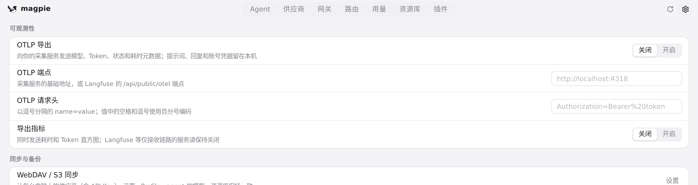
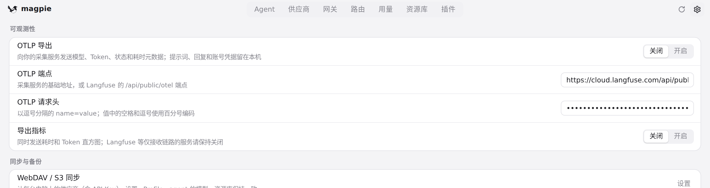
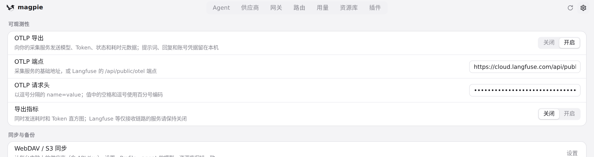
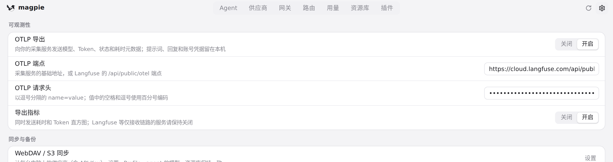

#412 界面预览
commit c48688c · 回到 PR · 设置页新增「可观测性」一节（#otelList）：OTLP 导出的开关、端点与请求头输入框、以及独立的「导出指标」开关，全部默认关闭；端点和请求头按回车即保存，环境变量存在时会多一行提示。
红线是鼠标走过的轨迹，红色圆环是一次点击；底部文字是这一步在做什么。空格暂停，← → 逐段查看。

设置里的可观测性一节 · 设置中「可观测性」一节的初始状态

填写端点与请求头并开启导出 · 填好端点与请求头之后的可观测性一节

填写端点与请求头并开启导出 · OTLP 导出开启后的可观测性一节

填写端点与请求头并开启导出 · 导出指标开启、两个开关都打开时的可观测性一节